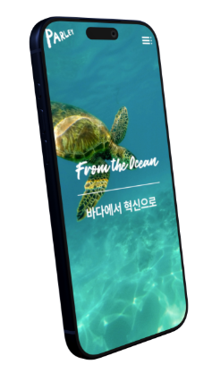
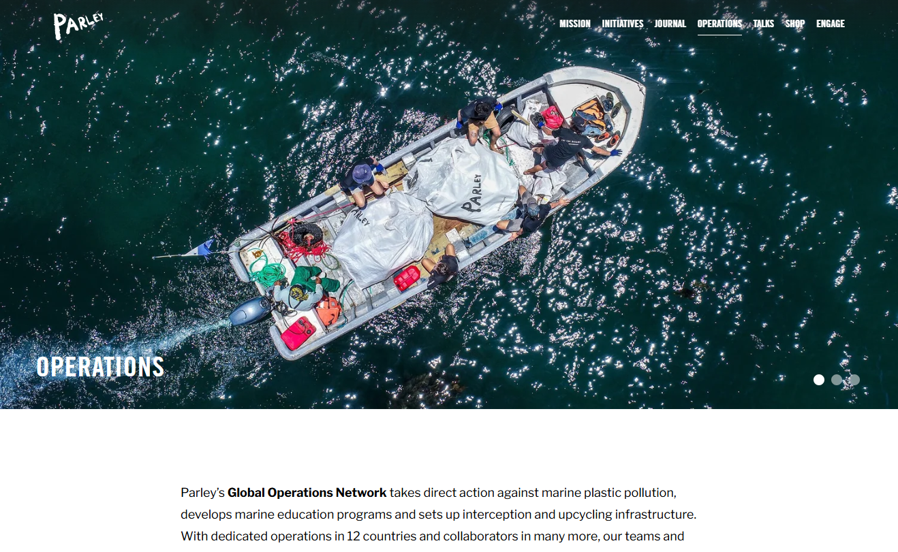
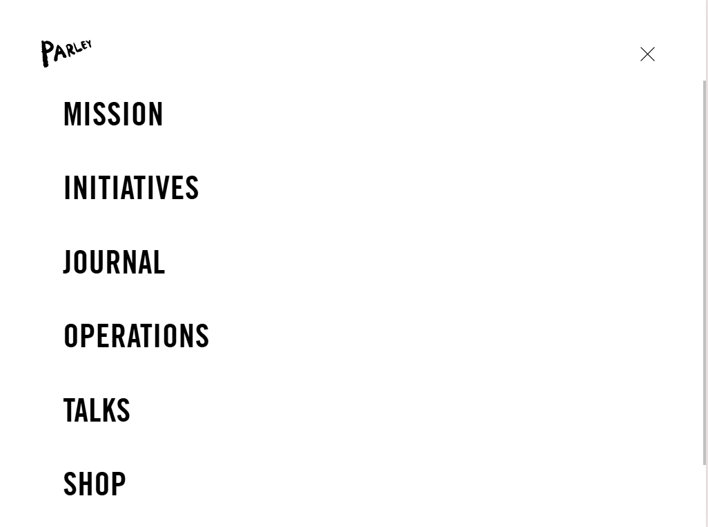
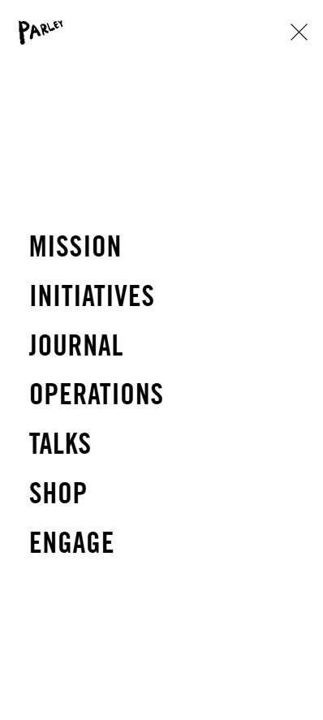
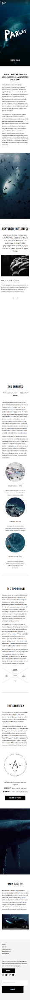
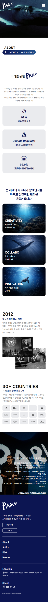

Leader 박유빈
UI/UX 디자인 70% · 웹퍼블리싱 60%

Parley
바다에서 혁신으로, Parley for the Ocean
웹페이지 리뉴얼 팀 프로젝트



Overview
해양 보호 메시지를 사용자가 빠르게 이해하고 참여 흐름으로 이어질 수 있도록 콘텐츠 구조를 정리했습니다.
Role & Skill
UI/UX 디자인 70% · 웹퍼블리싱 60%
메인 일부 섹션 구현 · 회의록 및 결과 정리
Desktop Structure



Responsive

